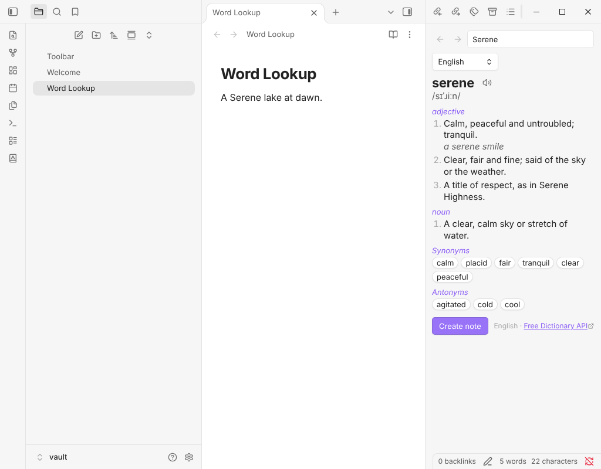

Free Obsidian plugin
Word Lookup
Look up any word in a sidebar dictionary with definitions, phonetics, synonyms and antonyms, or create a note for it.
Install from the Obsidian directory Open in Obsidian Source code and issues

What it does
Look up any word in a sidebar dictionary: definitions, phonetics with audio, examples, and synonyms and antonyms you can click to look up in turn. Replace a word with a synonym from the right-click menu, or make a note for it.
Word Lookup is a successor to Dictionary, which has not been updated since 2022.
Highlights
- Look up the selected word (or the word at the cursor, or the text selected in Reading view) opens the Dictionary in the right sidebar. The right-click menu has the same entry: Look up "word".
- The entry shows the word, its pronunciation (with a play button when a recording exists), the definitions under each part of speech with their examples, and synonyms and antonyms as buttons. Click one to look it up. A search box, a language picker, and back and forward buttons sit on top; the commands Go back to the previous word and Go forward to the next word do the same from the keyboard.
- Replace the word with a synonym (right-click menu or command) lists the synonyms in a picker you can filter by typing. The replacement keeps the capital letter or capitals of the original (
HappybecomesJoyful) and is one edit, so one undo takes it back. If you change the note while the list is open, nothing is replaced. - Create a note from the entry, with the built-in layout or your own template. If a note for the word already exists, it is opened, not overwritten.
- Languages. English uses the Free Dictionary API, with Wiktionary as a fallback when it has no entry or is down. Spanish, French, German, Italian, Portuguese and about twenty other languages come from Wiktionary, with definitions in English. Pick the language in the sidebar or in the settings. When a word has no entry in the chosen language but Wiktionary has it in others, the message says which.
- Remembers lookups for the session, so going back, or looking up the same word again, makes no request.
Details
- Version
- 0.1.0
- Needs Obsidian
- 1.7.2 or newer
- Platforms
- Desktop and mobile
- Author
- Siulved54
- Price
- Free and open source